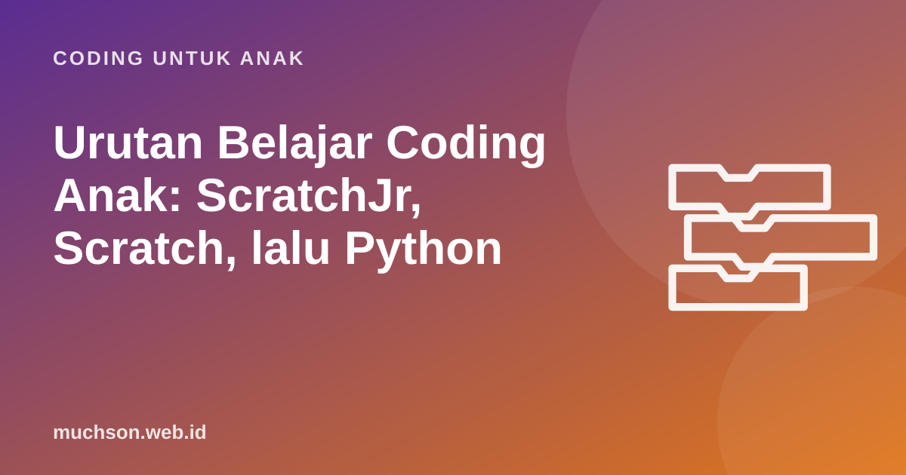

Beranda › Artikel › Coding untuk Anak
Coding untuk AnakUrutan Belajar Coding Anak: ScratchJr, Scratch, lalu Python
Orang tua sering bertanya: setelah Scratch, lalu apa? Haruskah langsung Python? Bagaimana dengan robotik dan pembuatan aplikasi? Artikel ini menyusun peta jalan yang realistis dari usia 5 tahun sampai remaja, lengkap dengan tanda kapan anak siap naik tahap.

Peta jalan dalam satu gambar
Tahap 1: ScratchJr (usia 5-7)
ScratchJr dikembangkan oleh DevTech Research Group di Tufts University bersama Lifelong Kindergarten Group MIT, untuk anak 5-7 tahun. Bloknya berupa ikon tanpa banyak teks, disusun dari kiri ke kanan. Anak bisa membuat cerita: kucing berjalan ke pohon, berkata "halo", lalu melompat. ScratchJr gratis di tablet.
- Yang dipelajari: urutan, kejadian sederhana (sentuh untuk mulai), pengulangan dasar.
- Tanda siap naik: sudah lancar membaca kalimat pendek dan mulai merasa ScratchJr "terlalu sederhana".
Tahap 2: Scratch (usia 8-12)
Scratch adalah tahap terpanjang dan paling penting. Di sinilah hampir semua konsep pemrograman dasar dikuasai dengan cara yang menyenangkan. Supaya tidak berputar di tempat, bagi tahap ini menjadi tiga level:
| Level | Konsep | Contoh proyek |
|---|---|---|
| Pemula | urutan, loop, kejadian, kostum | animasi nama, kartu ucapan, akuarium |
| Menengah | koordinat, kondisi, pesan, acak | labirin, tangkap bintang, cerita bercabang |
| Lanjut | variabel, operator logika, prosedur, clone, daftar | kuis dengan skor, hujan meteor, chatbot |
- Tanda siap naik ke Python: lancar memakai variabel dan kondisi, pernah membuat game dengan skor dan level, bisa menjelaskan programnya, dan mulai bertanya "bagaimana cara membuat aplikasi sungguhan?"
Kesalahan paling umum: pindah ke Python terlalu cepat karena terdengar lebih "serius". Anak yang belum memahami variabel dan kondisi di Scratch akan kesulitan dua kali di Python: konsepnya dan aturan penulisannya.
Tahap 3: Python (usia 11-14)
Python sering direkomendasikan sebagai bahasa teks pertama karena aturannya relatif sederhana dan mudah dibaca. Bandingkan program yang sama di Scratch dan Python:
nama = input("Siapa namamu? ")
for i in range(3):
print("Halo, " + nama)Konsepnya identik: input, pengulangan, menyambung teks. Yang baru hanyalah cara menulisnya. Inilah kenapa anak dengan dasar Scratch yang kuat biasanya cepat beradaptasi. Modul turtle bawaan Python juga memungkinkan menggambar seperti ekstensi Pena di Scratch, jadi transisinya terasa akrab.
Tahap 4: proyek nyata (13 tahun ke atas)
Setelah dasar Python, arah bisa disesuaikan minat: web (HTML, CSS, JavaScript) untuk yang suka desain, data untuk yang suka angka dan sains, game dengan pustaka seperti Pygame, atau robotik dan perangkat seperti micro:bit. Di tahap ini, proyek yang memecahkan masalah nyata (misalnya situs untuk ekskul atau pencatat tabungan) memberi motivasi paling besar.
Bagaimana dengan robotik?
Robotik dan coding visual bukan pilihan yang saling meniadakan. Banyak kit robotik untuk anak memakai bahasa blok yang mirip Scratch. Robotik menambah pengalaman fisik, tetapi butuh perangkat yang biayanya lebih besar. Dasar logika yang kuat dari Scratch membuat anak lebih cepat memahami pemrograman robot.
Berapa lama setiap tahap?
Dengan 2 pelajaran per minggu, kurikulum Scratch berisi 32 pelajaran selesai sekitar 4 bulan. Ditambah waktu untuk proyek bebas, tahap Scratch yang sehat biasanya berlangsung 6 bulan sampai 2 tahun, tergantung usia mulai.
Prinsip yang berlaku di semua tahap
- Membuat lebih penting daripada menonton. Satu jam berkarya lebih berharga dari tiga jam menonton tutorial.
- Proyek yang anak pedulikan. Minat adalah bahan bakar terbaik.
- Pamerkan karya. Menjelaskan proyek ke orang lain mengunci pemahaman.
- Konsistensi. Dua sesi pendek per minggu lebih baik daripada satu maraton per bulan.
Untuk tahap Scratch, PixelKode menyusun ketiga level di atas menjadi 7 modul, dan karena Studio-nya identik dengan Scratch 3, anak tidak perlu belajar ulang saat melanjutkan di Scratch atau beralih ke Python.
Tanya jawab
Apakah anak harus mulai dari ScratchJr?
Kapan anak siap belajar Python?
Apakah Python terlalu sulit untuk anak?
Bahasa apa setelah Python?
Sumber dan bacaan lanjut
- ScratchJr (Tufts University dan MIT Media Lab)
- Scratch, situs resmi
- Python: dokumentasi modul turtle
- micro:bit Educational Foundation